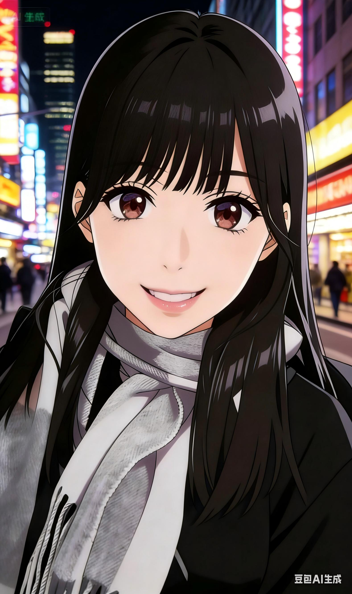

阳光活泼 · 可爱随性 · 积极向上
我是龚照，性格活泼可爱、随性开朗。
就读于华东政法大学，专业为司法会计，辅修法学，深耕法商融合领域，手握会计技能与法律思维双重buff，逻辑严谨、专业过硬，英语六级已顺利通过。
简单来说：会算账、懂法律、不迷路，正经学习，快乐生活～
口头禅：妙哉妙哉，好哉好哉
最爱表情包：我已急哭，都怪美国
最飒文艺委员（整条街最靓的那种）
擅长睡觉、品尝美食
文汇路·Alcoholics酒摊摊（酸汤水饺）、湖南土菜
日本 / 韩国
拜仁，巴萨，上海海港（呀不对，是上港！），武汉三镇
开学 和 周一
活泼随性
I'm Gong Zhao. Lively, cute, easy-going and positive.
East China University of Political Science and Law, major in Forensic Accounting, minor in Law. I have both accounting skills and legal thinking, with rigorous logic and professional competence. Passed CET-6.
In short: I do accounting, know law, study hard and live happily~
Catchphrase: Wonderful, marvelous
Favorite meme: I'm crying anxiously, it's all America's fault
The Coolest Literature and Art Committee Member
I'm good at sleeping, eating delicious food, and hanging out with Mr. F!
Wenhui Road · Alcoholics Bar (Sour Soup Dumplings), Hunan Dishes
Japan / South Korea
Bayern,FCB,Shanghai Port (Oops, it's Shanghai SIPG!),WH
School Opening & Monday
Lively and Casual